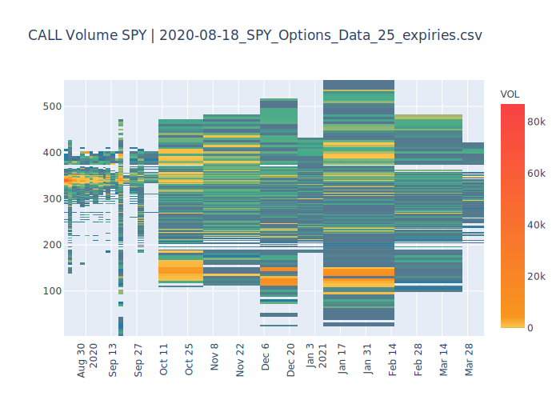

Dec. 29, 2020
Heatmaps are an effective way to visualise data on three axes. For a recent project, I used Python, Pandas and Plotly to generate a heatmap of options volume for SPY, a heavily-traded ETF that tracks the S&P 500. A heatmap vividly shows the strike prices and expirations where options are traded most frequently. This can reveal areas of interest for the ETF and the underlying equities of the S&P 500.
25 expirations of options data in .csv - To obtain this data, Yahoo Finance is the only freely available source of which I am aware. Data cannot be directly downloaded from the site. Yahoo Finance has an API but, in a separate project, we created a web scraper to download multiple expires and and convert the data from HTML to a .csv. The sample .csv can be downloaded here.
Updated Python installation (3.7+)
Plotly and Pandas libraries - If you're working with a recent distribution of Anaconda, these come installed.
If you don't have it installed, Anaconda is recommended as a package management platform (download). This is especially true with all the dependencies that come with doing data visualization-type projects. With Anaconda installed, open a terminal and create a virtual environment.
conda create --name myenvIf you don't specify a path for the environment, a prompt will ask if you wish to use the default path. If so, input yes. Then, activate the vitrual environment.
conda activate myenvThe terminal window should then display the virtual environment as active.
Create a Python file in your editor of choice. In the first lines, we'll import Pandas to read in the .csv tables, create dataframes, and clean and rearrange the data. Plotly will be used to generate the heatmap.
import pandas as pd
import plotly.graph_objects as goFirst, declare starting variables for the filepath to the .csv and a title for the chart.
data_path = path/to/data.csv
title = (' Volume SPY | {:s}' .format(data_path[(data_path.find("/202")+1):]))The core of the program will be two functions, one to convert the .csv to usable dataframes and another to generate the heatmap.
We'll use the first function to read in our .csv and create two separate "call" and "put" dataframes.
Let's name the function csv_to_df(). It will take a single parameter: the file path to the
.csv declared above. Once the .csv data is loaded, there is a bit of cleaning and rearranging to do.
First, drop all columns from the .csv data except four: the contract type, expiry date, strike price, and volume.
Within the remaining data, there will be extraneous en dashes, NaNs, and commas to remove.
Do this with the Pandas df.replace()(docs)
and df.fillna()(docs)
functions. Next, split the "call" and "put" data into separate dataframes and drop contract type columns,
since those are no longer needed. We can add a line to print the head of each dataframe
in the terminal window to confirm that our data loaded properly. The function finally returns
the separate "call" and "put" dataframes.
def csv_to_df(csv_data):
"""Read option data from .csv; clean, arrange, and create Pandas dataframe."""
#Create dataframe from .csv
df = pd.DataFrame(pd.read_csv(
csv_data,
usecols=[2,3,4,7],
names=['TYPE', 'EXPIRY', 'STRIKE', 'VOL'],
skiprows=1,
parse_dates=[0])
)
#Clean extraneous punctuation and zeros
df.replace('-','0',inplace = True)
df.replace(',','',inplace = True)
df["VOL"] = df["VOL"].str.replace(",","").astype(float)
df.fillna(0, inplace=True)
#Split into separate "PUT" and "CALL" dataframs
call_df = df[df.TYPE != 'PUT']
del call_df['TYPE']
put_df = df[df.TYPE != 'CALL']
del put_df['TYPE']
#Preview and return dataframes
print("CALL",call_df.head(),"PUT",put_df.head())
return call_df, put_dfThe second function will use Plotly to generate the heatmap. We'll call it heatmap(df, type).
It takes two parameters: an individual dataframe and the label ("call" or "put") for the dataframe.
First, create an object that invokes the Plotly heatmap function with fig = go.Figure(data=go.Heatmap().
Then, within the heatmap object, there will be three axes: "x", "y", and "z". These will correspond to
the "EXPIRY", "STRIKE", and "VOL" columns in the dataframe.
Further down in the function, there are a number of options we can select. A colorbar legend can be created for the z-axis.
We'll label it for "VOL", since volume will be the z-axis representing trading intensity
at each x, y coordinate. Since the default coloration in the heatmap is linear and distribution of volume data is
heavily oriented to fewer than 50 trades at a given strike and expiration, we will need to adjust the
color scaling. With some adjustment, the color scaling will more useful in the relatively few areas where trading volume is 10,000+ trades–
these are some of the more interesting parts of the chart. We do this by specifiying color palate and
incrementing the scale to a more logarithmic set of intervals. We can specify a color palate by setting rgb values
for each colorband. Here, we'll go with a green-yellow-orange-red scheme. There is a sub-function,fig.update_layout(),
to tweak the layout further. Here, we'll set the heatmap title and x-axis ticks and angle.
Finally, fig.show()will generate the heatmap in HTML and should automatically open the file in our browser. To write the heatmap to a
HTML file on the local disk, set a directory and file name.
def heatmap(df, type):
""" Create .html based Plotly heatmap with expiry (x-axis), strike (y-axis),
and volume (z-axis)."""
#Invoke heatmap object and set x, y, z axes
fig = go.Figure(data=go.Heatmap(
x=df["EXPIRY"],
y=df["STRIKE"],
z=df["VOL"],
colorbar=dict(title='VOL'),
#Non-default green/orange/red color scheme on a log-ish scale for display.
colorscale=[
[0, 'rgb(39, 125, 161)'],
[1./160000, 'rgb(87, 117, 144)'],
[1./8000, 'rgb(67, 170, 139)'],
[1./400, 'rgb(249, 199, 79)'],
[1./20, 'rgb(248, 150, 30)'],
[1., 'rgb(249, 65, 68)'],
])
)
#Adjust labeling of plot title and x-axis
fig.update_layout(
title=str(type+heatmap_title),
xaxis_nticks=25,
xaxis_tickangle=-45
)
#Display each heatmap and write HTML file to chosen directory
fig.show()
#fig.write_html(r"[path/title.html]")Finally, we call our functions to generate separate "call" and "put" graphs.
#Call Heatmap
heatmap(csv_to_df(csv_data)[0],"CALL")
#Put Heatmap
heatmap(csv_to_df(csv_data)[1],"PUT")The HTML heatmap has some useful functionality built in by Plotly. Scrolling over any point in the chart reveals a tool tip with the values at each axis. The chart is zoomable with a rectangular selection tool. There are zoom and recenter tools in the upper right hand menu. The only small drawback to the HTML output is the file size for this project was ~3.5MB. For a smaller, static image in jpeg, png, or svg (like the one below), the Kaleido library can be used with Plotly (docs).

Looking at the heatmap, we see some useful information right off the bat. There is a large, sudden spread in trading at the Sept. 18 expiration. This is the first expiration following the Federal Reserve Open Market Committee meeting on September 15-16 where interest rate announcments are set. There is a similar spread at the Dec. 18 expiration, which also follows the FOMC meeting December on 15-16. By hanging on to a heatmap and cross refererencing price action during the time period, you can informally backtest some interesting strategies.
The functionality built into Plotly makes it a first go-to for heatmap visualization. In future versions, I'd like to change the z-axis "VOL" bar colorscale so that it's logarithmic as well. I tried and did not have similar success with other products like Seaborn's heatmap. Plotly's heatmap had the advantage of working out-of-the-box with minimal data wrangling.
Happy heatmapping.